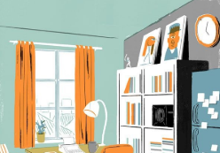
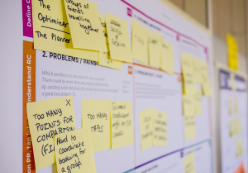

All Articles
Effective ways to Cram up for an exam!
Gulping up everything isn't the best way to study for any exam, so before we begin, if you've a big chunk of time then I would suggest you not to cram up. If not then let's jump straight into what you can do
Tanmay Tiwari
July 25th • 4 min read
21 Ways to keep up with your Notes

Many of us are in the habit of leaving things for the last moment. Being a student, you must have been a victim in a situation where either you are not able to complete notes or maybe do not have a strategy to study.
Sameer Hussain
July 24th • 3 min read
EVILS OF CORRUPTION
Whether in the present or the past, corruption has stayed with us like a part of society. Even if you think of eradicating it, implementation on the real ground is very difficult because of its deep roots in the system.
Shruti Govil
July 23rd • 4 min read
ELEPHANT DEATHS
The inhuman behaviour of killing the animals cruelly is getting increased day-by-day. With what has happened recently in Palakkad district of Kerala, India, furious reactions of people have taken the social media like a storm.
Shruti Govil
July 22nd • 4 min read
Things you should learn to do in class!
Classes can be really boring sometimes, I know! But, being a very active participant in a class can actually solve a lot of your problems. Like being in touch with the syllabus to having clear concepts during exams.
Diksha Mitra
July 21st • 3 min read
7 Study Tips to Retain Information in Less Time!

Last-minute study? We all have been in that place. It feels so stressful and hopeless! But, don’t you worry, Notes Pickup has not only one or two, but 7 tips to retain information in less time while studying.
Diksha Mitra
July 20th • 4 min read
LEARN TOPICS IN NO TIME WITH THESE TRICKSLEARN TOPICS IN NO TIME WITH THESE TRICKS

Are you also a part of the list of those students who confront complications in memorizing some topics? If yes, then you have arrived at the right place. We are here to provide some of the fascinating tips.
Shruti Govil
July 19th • 4 min read
7 TIPS TO MAKE YOUR NOTES MORE UNIQUE THAN OTHERS

You must have always heard that learning is productive. But let us tell you, notes are equally profitable as well. To make your understanding effective, you need to have effective notes as well. So, why not make your notes more unique.
Shruti Govil
July 18th • 4 min read
Facts That Affect Your Studies
When we were young, studying was fun for many. We enjoyed studying textbooks with so many colourful illustrations. How about now? We feel easily exhausted, long hours of study are difficult these days.
Sameer Hussain
July 17th • 3 min read

9 Things You Must Remember
"Notes" are literally said to be the biggest ‘weapon’ of a student irrespective of any class or age. Every year we have been tackling exams with sincere help from our notes. Be it ours, be it others. Today, we discuss some important points to keep in mind while taking notes.
Rajarshi Saha
July 16th • 3 min read
Studying smart not hard!
Hello fellas! I bet there has been a time when your exams are just about to close in and you haven't covered everything. Basically, you don't have enough time to absorb everything in that amount of time.
Tanmay Tiwari
July 15th • 3 min read
See Yourself Winning
To well explain the truth that the secret behind every single success is a strong purpose, its really interesting to see how Socrates’ gave insight to a young man who approached him to find the key to success.
Dawn Mariat Mathew
July 14th • 3 min read

5 Benefits of writing notes by hand
Gulping up everything isn't the best way to study for any exam, so before we begin, if you've a big chunk of time then I would suggest you not to cram up. If not then let's jump straight into what you can do
Rajarshi Saha
July 13th • 3 min read
Pen it Down: Top Tips for Blogging

You might know how to create a world of words with a mountain of implications concealed within! Are you an extraordinarily gifted person who can make marvelous magic moments with alphabets? Are you longing for a chance to unwrap your mind?
Dawn Mariat Mathew
July 12th • 4 min read
Know How E-Learning Keeps You Globally Connected
“If you are not willing to learn, no one can help you. If you are determined to learn, no one can stop you” said Zig Ziglar. If every individual is filled with a passionate wish to learn and a fervent longing for learning, how the world would have changed.
Dawn Mariat Mathew
July 11th • 4 min read
The Inside-Out Tactic to Become a Genius
The credo “We become what we think about” has mesmerised billions of souls all over the universe. The genius behind the brainstorming secret is Earl Nightingale, an American radio speaker and author, who has left an astounding legacy of perceptions on life and leadership.
Dawn Mariat Mathew
July 10th • 4 min read